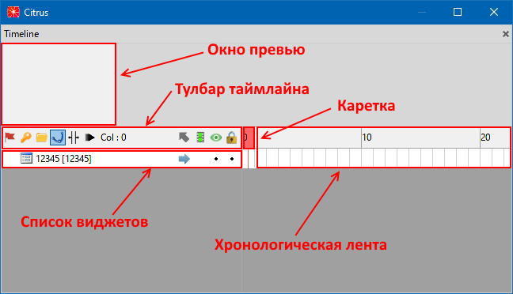
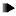
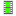
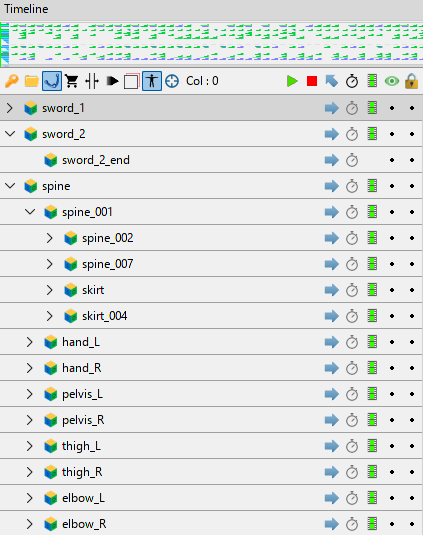
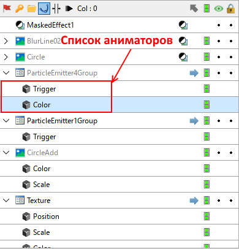
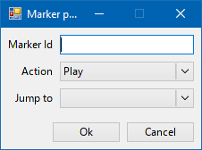

Panel «Timeline»
[EN | RU]
Timeline Panel provides all information about frames, animators, markers and scene hierarchy. It organizes and controls a scenes's content over time.
It includes:
- preview scrollbar;
- toolbar;
- list / tree of widgets;
- chronological roll pane with markers and keyframes.
Preview Scrollbar gives you ability to see the whole timeline and drag & move your workspace along timeline.
Use Alt + MouseWheel hotkey to zoom-in / zoom-out for more comfortable and efficient animating experience.
Toolbar

- Animation mode -- animation mode allows editor to enter all nested animations;
- Automatic keyframes -- auto-keyframe mode sets animators automatically when you change any property of the widget on scene;
- Create folder -- create folder for grouping widgets on timeline;
- Edit curves -- curves mode allows to edit blending curves between animators;
- Animation stretch mode -- stretch mode allows you to scale animators in the selected range by dragging it with left and right edges;
-  Slow motion mode (hotkey
~) -- slow-mo mode slows the animation x0.10 times during preview; - Col: N -- current timeline column indicator (shows ou current frame or range of frames);
- Exit current container (hotkey
Backspace) -- exit from the current container; -  Lock animation -- enable/disable node animation for all animators. Green - all animators enabled, grey - all animators disabled, blue - partly disabled (it can happen when you create a new animator while others are disabled);
- Show Node -- toggle widget visibility (shown / hidden) inside Viewport (also known as "SceneView"). Use hotket
Shiftto toggle only selected widgets; - Lock Node -- block widget transformation and modification.
List of widgets on the left side of the timeline allows you to navigate through scenes' hierarchy.
Press RMB on any widget to open context menu:
- Inline external scene -- inline selected external scene (frame with "ContentsPath") into current document;
- Export Scene... -- export seleted @Lime.Frame-based widget as ".tan" document;
- Copy Asset Path -- copy path to the selected widget relative to the bundle it is in;
- Copy/Cut/Paste/Delete -- move / remove operations;
- Rename -- rename selected widget;
- Color mark -- set an indicator color for the selected widget. It does not change the real widget's color and is available only from Tangerine;
- Convert to -- convert selected item to widget of another type (only if applicable).
For parallel animations with enabled "Experimental: timeline hierarchy" option you can use Shift + Space hotkey or click on the toggle icon (left to the widget item's name) to expand / hide list of children widgets.

Animators

All animators (and their keyframes) are available from a rollpane on the right side of the Timeline.
There are several operations available to manipulate keyframes / animations:
- Cut Keyframes (hotkey
Ctrl + Alt + X) -- cut selected keyframes (including their animators); - Copy Keyframes (hotkey
Ctrl + Alt + C) -- copy selected keyframes; - Paste Keyframes (hotkey
Ctrl + Alt + V) -- paste selected/copied keyframes starting at current frame. If widget does not have some animated property (animator), it will be ignored. - Reverse Keyframes -- "reverse" order of keyframes on the selected range of frames. Ex. if widget changes its position from A to B it would change it from B to A and so on.
- Insert Timeline Column (hotkey
Ctrl + Q) -- insert a new column on the timeline; - Remove Timeline Column (hotkey
Ctrl + W) -- remove the current column on the timeline. If column had keyframes they will be shifted left; - Delete Selected Keyframes (hotkey
Ctrl + Del) -- remove selected keyframes (including their animators); - Numeric Move -- shiftig a range of the selected frames on timeline with N frames to the right. Use negative value for shifting to the left.
- Numeric Scale -- scaling a range of the selected frames on timeline with a specified multiplier.
Markers
Double-Click on the Timeline's frame meter creates new markers. Also you can create them using Alt + 1/2/3 hotkeys for Play/Stop/Jump markers respectively.

- Marker Id -- marker's indentificator / name;
- Action -- action type for marker, one of: Play, Jump or Stop. Action happens when animation reaches marker's frame;
- Jump to -- transition marker used for "Jump" action. Animation "jumps" onto it when it reaches marker's frame;
- Easing -- marker easing / interpolation function, read Easing page for more information.